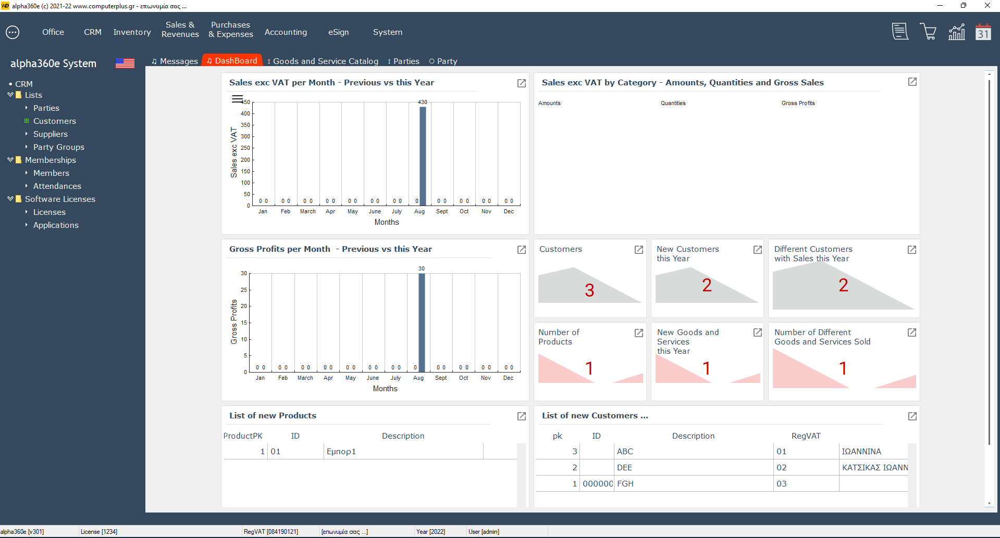

Introducing the tabbed UI
From a "functional" view, there are 2 basic types of "windows" in the tabbed UI - the Browse and the Form.
A classic paradigm for a browse is a window that shows Product records.
From this window we can query or search the products database, add a new record or select and edit a product record.
The editing is done inside the browse [with the help of a table control] _OR_ it can be done in separate windows of the Form type.
This "paradigm" is nothing new - it has been around for a long time - and many classic RAD tools have used it with great success.
Now all alpha360 tabbed UI windows - Browses and Forms - are always:
- WD Internal Windows - autonomous, with their own buffers [independent HFSQL context],
- embedded inside dynamic tabs,
- controlled by just 2 UI procedures,
- never have ANY kind of CRUDE operations inside them,
- all of these windows are procedures, with just one parameter of type ST_a360_DynamicWindow - see the project code for definitions.
All Browse and Form windows have the same "visual design", the same set of local procedures and the same "behavior and workflow", without the use of templates.
The only windows, that are a little different, are the dashboard windows - see below ..
